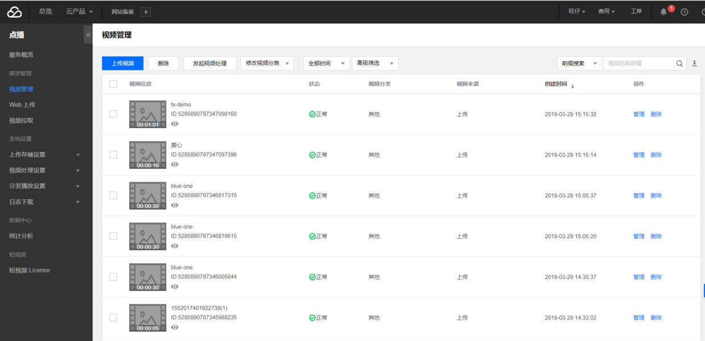
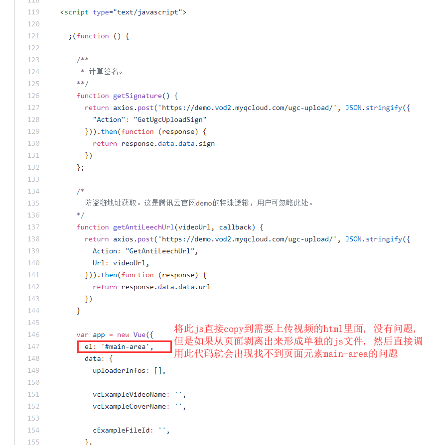

原文连接:https://www.cnblogs.com/wangzaiplus/p/10658638.html
前言
所谓视频上传，是指开发者或其用户将视频文件上传到点播的视频存储中，以便进行视频处理、分发等。
一、简介
腾讯云点播支持如下几种视频上传方式：
- 控制台上传：在点播控制台上进行操作，将本地视频上传到云点播，适用于直接管理少量视频的场景，具有方便快捷、无技术门槛的优点；
- 服务端上传：开发者将存储在其后台服务器中的视频上传到云点播，适用于自动化、系统化的运营场景；
- 客户端上传：终端用户将客户端本地视频上传到云点播，适用于 UGC、PGC 等场景，支持如下三端：
本文将介绍第三种视频上传方式: Web客户端上传
所谓客户端视频上传，是指 App 的最终用户将本地视频上传到点播平台。客户端上传的整体流程如下图所示:

二、思路
- 开通服务
- 获取云 API 密钥
- 服务端派发签名
- 客户端集成
说明: 前2步参照腾讯云官方文档指引自己完成, 本文着重讲解后2步代码实现
三、最终效果

四、代码实现
1、服务端派发签名
首先, 为什么要这一步, 因为, 在客户端上传场景下，客户端是直接将视频文件上传到腾讯云点播，不需要由 App 服务端进行中转。因此，腾讯云点播必须对发起请求的客户端进行鉴权。但由于 SecretKey 的权限过大，App 不应该将此信息泄露到客户端，否则将会造成严重的安全问题。
因此，客户端在发起上传之前，必须要到 App 的签名派发服务申请上传签名，即流程图中的第1步。
2、获取签名代码
获取签名一共只需要两个类: Signature和SignatureController
1)、Signature
package com.cn.pinliang.admin.media.upload;
import sun.misc.BASE64Encoder;
import javax.crypto.Mac;
import javax.crypto.spec.SecretKeySpec;
public class Signature {
private String secretId;
private String secretKey;
private long currentTime;
private int random;
private int signValidDuration;
private static final String HMAC_ALGORITHM = "HmacSHA1";
private static final String CONTENT_CHARSET = "UTF-8";
public static byte[] byteMerger(byte[] byte1, byte[] byte2) {
byte[] byte3 = new byte[byte1.length + byte2.length];
System.arraycopy(byte1, 0, byte3, 0, byte1.length);
System.arraycopy(byte2, 0, byte3, byte1.length, byte2.length);
return byte3;
}
public String getUploadSignature() throws Exception {
String strSign;
String contextStr = "";
long endTime = (currentTime + signValidDuration);
contextStr += "secretId=" + java.net.URLEncoder.encode(secretId, "utf8");
contextStr += "¤tTimeStamp=" + currentTime;
contextStr += "&expireTime=" + endTime;
contextStr += "&random=" + random;
try {
Mac mac = Mac.getInstance(HMAC_ALGORITHM);
SecretKeySpec secretKey = new SecretKeySpec(this.secretKey.getBytes(CONTENT_CHARSET), mac.getAlgorithm());
mac.init(secretKey);
byte[] hash = mac.doFinal(contextStr.getBytes(CONTENT_CHARSET));
byte[] sigBuf = byteMerger(hash, contextStr.getBytes("utf8"));
strSign = new String(new BASE64Encoder().encode(sigBuf).getBytes());
strSign = strSign.replace(" ", "").replace("\n", "").replace("\r", "");
} catch (Exception e) {
throw e;
}
return strSign;
}
public void setSecretId(String secretId) {
this.secretId = secretId;
}
public void setSecretKey(String secretKey) {
this.secretKey = secretKey;
}
public void setCurrentTime(long currentTime) {
this.currentTime = currentTime;
}
public void setRandom(int random) {
this.random = random;
}
public void setSignValidDuration(int signValidDuration) {
this.signValidDuration = signValidDuration;
}
}2)、SignatureController
package com.cn.pinliang.admin.controller;
import com.cn.pinliang.JsonResult;
import com.cn.pinliang.admin.media.upload.Signature;
import com.ctt.framework.ConfigUtil;
import com.google.common.collect.Maps;
import org.springframework.stereotype.Controller;
import org.springframework.web.bind.annotation.RequestMapping;
import org.springframework.web.bind.annotation.ResponseBody;
import java.util.Map;
import java.util.Random;
@Controller
@RequestMapping("/signature")
public class SignatureController{
@RequestMapping("getUgcUploadSign")
@ResponseBody
public JsonResult getUgcUploadSign() {
String secretId = "your secretId";
String secretKey = "your secretKey";
Signature sign = new Signature();
sign.setSecretId(secretId);
sign.setSecretKey(secretKey);
sign.setCurrentTime(System.currentTimeMillis() / 1000);
sign.setRandom(new Random().nextInt(java.lang.Integer.MAX_VALUE));
sign.setSignValidDuration(3600 * 24 * 2);
try {
String signature = sign.getUploadSignature();
Map<String, String> map = Maps.newHashMap();
map.put("signature", signature);
return JsonResult.succeed(map);
} catch (Exception e) {
e.printStackTrace();
return JsonResult.fail("获取签名失败");
}
}
}好了, 现在可以调用getUgcUploadSign获取签名了
3、客户端集成
1)、说明
说是客户端集成, 其实就是前端js+css+html实现视频的上传, 看了官方文档和GitHub demo, 发现有一个问题, 那就是难道每次上传视频都要copy这些代码到我们自己的页面吗, 能不能抽离出单独的js直接调用就行了? 可以, 但是:

所以, 我们不能直接剥离这些js, 还得封装一下才行
2)、封装(干货才开始)
先看下经过后面代码的封装上传视频有多么简单, 真正做到一行代码解决视频加载与上传:
loadAndUploadVideo('form_id', 'teachingVideo', "uploadVideo", "videoFileId", 200);
- 首先, 既然要用别人的SDK, 我们得引入相关依赖才行, 在jsp页面引入:
<%--腾讯云上传视频js依赖--%>
<script src="https://cdn.jsdelivr.net/npm/es6-promise@4/dist/es6-promise.auto.js"></script>
<script src="https://cdnjs.cloudflare.com/ajax/libs/vue/2.5.21/vue.js"></script>
<script src="https://cdnjs.cloudflare.com/ajax/libs/axios/0.18.0/axios.js"></script>
<script src="https://unpkg.com/vod-js-sdk-v6"></script>
<%--上传进度div--%>
<div class="center-in-center" id="txUploadProgress" style="display: none"></div>说明:
a. 官方文档用的是vue.js, 虽然没学过, 但好歹有点js基础, 万变不离其宗, 不会的查下相关文档就行了
b. 与官方demo上传进度有点不一样的是, 我在上传时加了一层遮罩层, 页面中心显示上传进度, 所以引入了上传进度div, 总之, 根据自己实际项目需要来
- 然后, 在你的页面嵌入:
<div id="uploadVideo" style="margin-left: 40px; margin-top: 20px">
<input type="hidden" id="teachingVideo" value="${hotProduct.teachingVideo}"/>
<form ref="vExample">
<input type="file" style="display:none;" ref="vExampleFile" @change="vExampleUpload($event)" id="videoFileId" accept="video/mp4"/>
</form>
<div class="btn btn-app btn-default btn-sm pr" style="width: 160px; ">
<i @click="vExampleAdd" class="ace-icon fa fa-cloud-upload bigger-200" style="font-size: 20px">上传视频</i>
</div>
</div>说明:
调用时指定的id与此页面元素id一一对应
- 然后, 新建js文件, 代码:
/**
* 腾讯云视频上传
*/
var progressId = 'txUploadProgress';// 上传进度id
/**
* 加载和上传视频: 页面初始化时调用, 可以直接通过视频url加载视频到页面
* 除maxSize字段非必传外, 其他字段均必传, 否则后果自负
* @param formId form表单id
* @param name 与后端绑定的name字段, 如shortVideo字段, 此字段必须与隐藏域id字段相同, 即id name一致
* @param uploadVideoDivId 视频上传相关的div块id
* @param videoFileId 视频文件id, 此字段作用是解决vue无法再次上传相同文件的问题, 将此id值清空即可再次上传
* @param maxSize 文件大小, M为单位, 不传表示不限制文件大小
*/
function loadAndUploadVideo(formId, name, uploadVideoDivId, videoFileId, maxSize) {
loadVideo(uploadVideoDivId, name);
uploadVideo(formId, name, uploadVideoDivId, videoFileId, maxSize)
}
/**
* 加载视频
* @param uploadVideoDivId 将视频追加到此id后面
* @param name 根据name获取原视频值, 因此id与name字段必须相同才能拿到旧值
*/
function loadVideo(uploadVideoDivId, name) {
var oldVideoUrl = $("#" + name).val();
if (oldVideoUrl != null && oldVideoUrl != ""){
var str = '';
str += '<div class="video">' ;
str += ' <video src="'+oldVideoUrl+'" controls="controls" >';
str += '</div>';
$("#" + uploadVideoDivId + " .video").remove();
$("#" + uploadVideoDivId).append(str);
}
}
/**
* 上传视频, 腾讯云官方demo + 改造
* @param formId
* @param name
* @param uploadVideoDivId
* @param videoFileId
* @param maxSize 文件大小, M为单位, 不传表示不限制文件大小
*/
function uploadVideo(formId, name, uploadVideoDivId, videoFileId, maxSize) {
// 获取签名, 腾讯云要求直接上传视频的客户端必须获取签名
function getSignature() {
var url = "" + ctx + "signature/getUgcUploadSign.action"
return axios.post(url).then(function (response) {
return response.data.data.signature
})
};
var app = new Vue({
el: '#' + uploadVideoDivId,
data: {
uploaderInfos: [],
},
created: function () {
this.tcVod = new TcVod.default({
getSignature: getSignature
})
},
methods: {
vExampleAdd: function () {
this.$refs.vExampleFile.click()
},
vExampleUpload: function (event) {
if (!checkVideo(event, maxSize, videoFileId)) {
return;
}
onVideoSelected()
var self = this;
var videoFile = this.$refs.vExampleFile.files[0]
var uploader = this.tcVod.upload({
videoFile: videoFile,
})
uploader.on('video_progress', function (info) {
uploaderInfo.progress = info.percent;
// 上传进度
var percent = Math.floor(uploaderInfo.progress * 100) + '%'
$("#" + progressId).text("正在上传 : " + percent)
})
uploader.on('video_upload', function (info) {
uploaderInfo.isVideoUploadSuccess = true;
})
var uploaderInfo = {
videoInfo: uploader.videoInfo,
isVideoUploadSuccess: false,
isVideoUploadCancel: false,
progress: 0,
fileId: '',
videoUrl: '',
cancel: function() {
uploaderInfo.isVideoUploadCancel = true;
uploader.cancel()
},
}
this.uploaderInfos.push(uploaderInfo)
uploader.done().then(function(doneResult) {
uploaderInfo.fileId = doneResult.fileId;
return doneResult.video.url;
}).then(function (videoUrl) {
uploaderInfo.videoUrl = videoUrl
onVideoUploaded(formId, name, videoUrl, videoFileId, uploadVideoDivId);
})
}
},
})
}
/**
* 选择视频后显示上传进度
*/
function onVideoSelected() {
$("#" + progressId).text("正在上传 : 0%")
$("#" + progressId).show()
startLoadding();
}
/**
* 视频上传完成
* @param formId
* @param name
* @param videoUrl
* @param videoFileId
* @param uploadVideoDivId
*/
function onVideoUploaded(formId, name, videoUrl, videoFileId, uploadVideoDivId) {
endLoadding();
$("#" + progressId).hide();
layerAlert("上传完成")
// 上传完成后清空fileId, 否则vue无法再次选择此文件
$("#" + videoFileId).val('')
// 将上传成功后的视频url追加到表单
formAppendVideo(formId, name, videoUrl);
if (videoUrl != ""){
var str = '';
str += '<div class="video">';
str += ' <video src="'+videoUrl+'" controls="controls" >';
str += '</div>';
$("#" + uploadVideoDivId + " .video").remove();
$("#" + uploadVideoDivId).append(str);
}
}
/**
* 删除视频, 删除页面视频只需要uploadVideoDivId字段即可, 但同时还应清空form表单的videoUrl
* @param formId
* @param uploadVideoDivId
* @param name
*/
function deleteVideo(formId, uploadVideoDivId, name) {
$("#" + uploadVideoDivId + " .video").remove();
formAppendVideo(formId, name, null);
}
/**
* 追加视频url到form
* @param formId
* @param name
* @param videoUrl
*/
function formAppendVideo(formId, name, videoUrl){
videoUrl = null == videoUrl ? '' : videoUrl;
var form = $('#' + formId);
var tmpInput = $('<input type="hidden" name="'+name+'" value="'+videoUrl+'" />');
form.append(tmpInput);
}
/**
* 校验视频格式和大小
* @param event
* @param maxSize 不传表示不限制文件大小
* @returns {boolean}
*/
function checkVideo(event, maxSize, videoFileId) {
var flag = true;
var accept = event.target.accept;
var file = event.target.files[0];
var type = file.type
if(accept.indexOf(type) == -1) {
layerAlert('文件格式不正确');
$("#" + videoFileId).val('')
flag = false;
}
if (maxSize != undefined) {
if(file.size > 1024 * 1024 * maxSize) {
layerAlert('文件不能大于' + maxSize + 'M');
$("#" + videoFileId).val('')
flag = false;
}
}
return flag
}说明:
a. 代码注释足够详细了
b. 视频上传核心代码在uploadVideo方法
稍微解释下uploadVideo方法:
- 先调用SignatureController里面的getUgcUploadSign方法获取签名
- 再通过vue定义视频文件点击、选择、上传后的事件
c. 有人会问不是上传视频吗, 为什么还有loadVideo, 因为, 编辑时进入页面不可能之前的视频就不显示吧, 所以, 初始化调用loadAndUploadVideo方法时就会将原视频嵌入到页面中了
d. 本文还加了上传视频的一些限制, 比如格式、大小之类的
e. formAppendVideo方法需要说明一下, 这个方法作用是上传视频后直接将视频url以name形式追加到表单元素, 这样就不用再form submit的时候再获取videoUrl了, 直接提交到后端, 这也是一行代码搞定视频上传的必要方法
3)、使用
上述代码就可以实现一行代码搞定视频上传加载了, 通过在页面初始化时调用loadAndUploadVideo方法即可, 具体如下:
a: jsp页面引入相关vue js
b: jsp页面嵌入html
c: 新建js, 将上述js代码copy进去
d: 页面加载完毕初始化时调用:
loadAndUploadVideo('form_id', 'teachingVideo', "uploadVideo", "videoFileId", 200);即可
结语: 本文通过参考腾讯云点播官方文档, 实现了对视频上传和加载功能的封装, 最终能够通过调用一行代码实现功能, 由于每个项目不同, 小伙伴需要根据自己实际情况修改进行代码适配, 谢谢